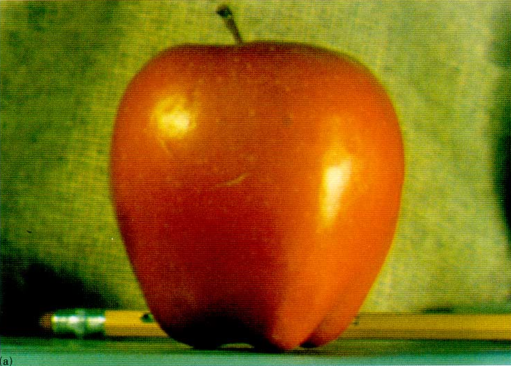

Return to Assignment 2 Overview
This is a breakdown of how I built the gaussian and laplacian stacks:
I read each image and then divided it by 255 so that the pixel values are between 0 and 1 only. The original image is the first level of the stack. For every sigma in sigma = [2, 4, 8, 16, 32, 64], I made a Gaussian filter with cv2.getGaussianKernel and the outer product gaussian_2d = gaussian_1d @ gaussian_1d.T, using ksize = 6σ + 1. I convolved each colour channel of the previous level with this filter using signal.convolve(..., mode='same'), stacked the channels back together and added the result to the stack. I doubled sigma at each level to give 7 levels that get blurrier each time.
Each Laplacian level is one Gaussian level minus the next one, gaussian_stack[i] - gaussian_stack[i+1], which keeps only the band of frequencies that was removed by that blur. For the last level I used the last Gaussian level, so that adding all of the Laplacian levels together gives back the original image.
The Laplacian levels have negative values, so I added 0.5 to every level except the last one and clipped the result to 0–1 (so 0 would be mid-gray). I also flipped the channels with [:,:,::-1] since OpenCV reads images as BGR and matplotlib displays them as RGB.
This is a breakdown of how I used a mask:
The mask is the same size as the images and has 1s where I want the first image and 0s where I want the second image. For a vertical seam like for the oraple and my capybara example, the mask is a step function with 1s on the left half and 0s on the right half.
I built a Gaussian stack of the mask with the same sigma values as the images.
At every level, I multiplied the first image's Laplacian level by that level of the mask, and the second image's Laplacian level by 1 - mask. Then I added the two masked levels together.
I added all of the combined levels together to get the final blended image. Fine details are blended with a sharp mask and only mix near the seam, while the blurry levels are blended with a very wide mask and mix across a large area.
I tried using 5 levels at first, but the colours still changed too suddenly across the seam. Going up to 7 levels (sigma up to 64) made the colour transition much smoother.
These are the original images from the paper:

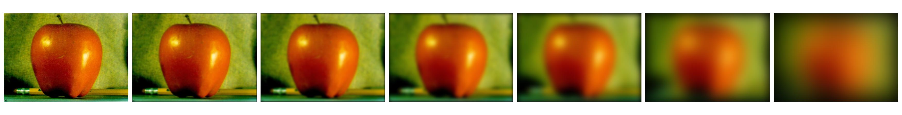
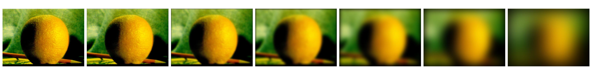
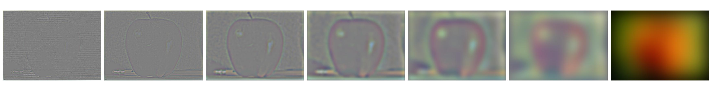
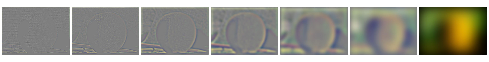
The first three rows are Laplacian levels 0, 2 and 4. The left column is the masked apple, the middle column is the masked orange and the right column is the two added together. The last row is all of the levels added together.
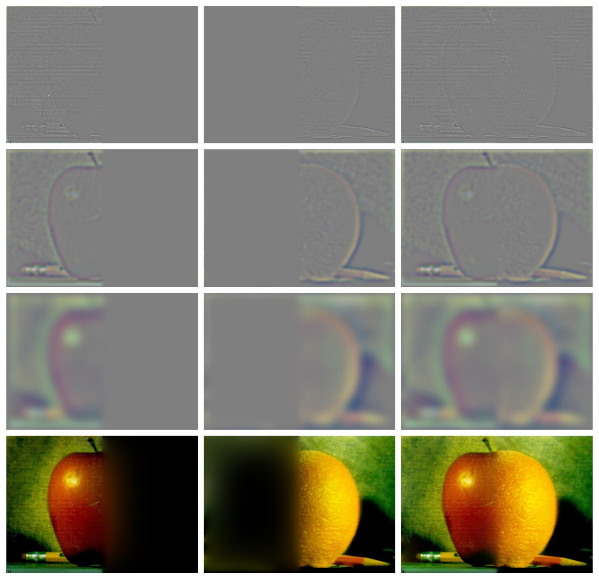
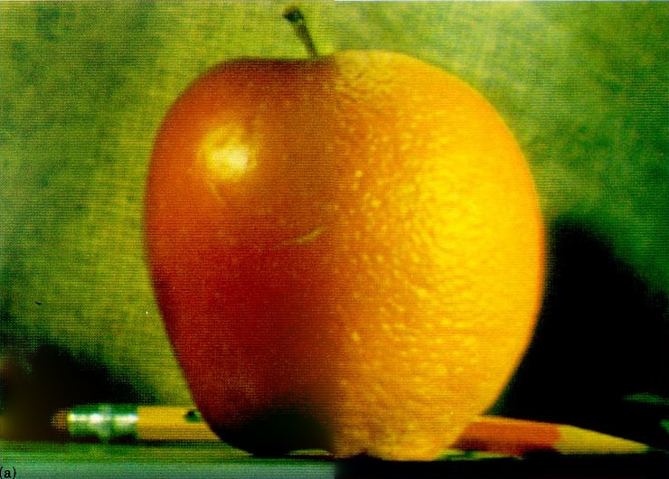
For the first custom blend I used two capybara plushies, one in a green dinosaur costume and one in a blue shark costume, with the same vertical step mask as the oraple.
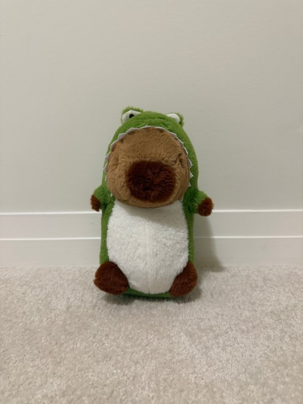
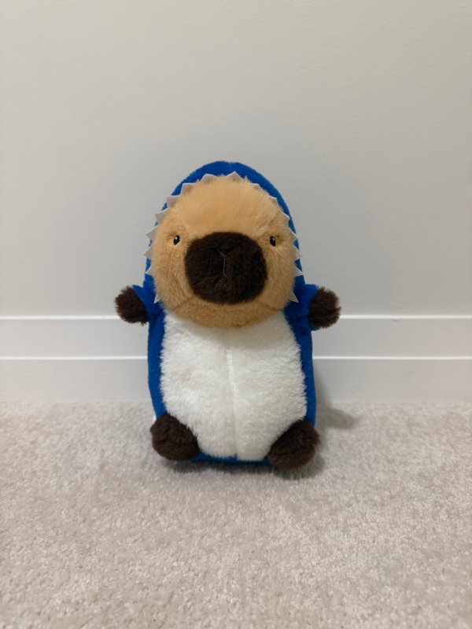
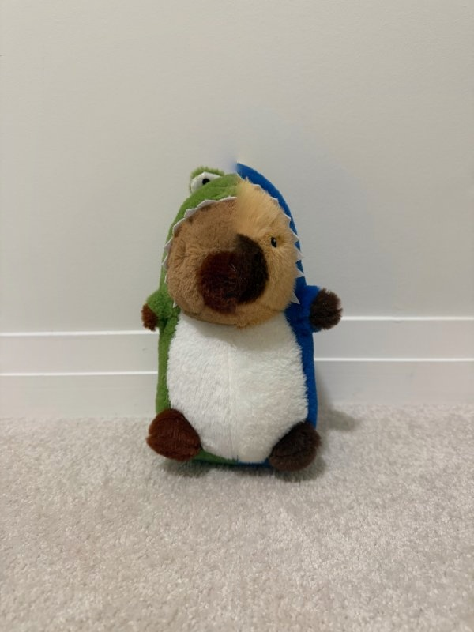
The hoods, bellies and faces join without a hard line. The face looks split because each capybara's face is slightly off-centre in its photo, so the straight seam cuts through the two faces at different places. There is also a pale bluish smudge just above the head, where the blue hood's colour spreads across the seam at the coarse levels.
For the irregular mask, I put the llama's face onto the chicken's body. I made the mask with np.ones_like and drew a filled ellipse of 0s with cv2.ellipse(mask, (297, 245), (80, 62), 0, 0, 360, (0, 0, 0), -1), centred on the llama's face. Inside the ellipse is the llama and everywhere else is the chicken.
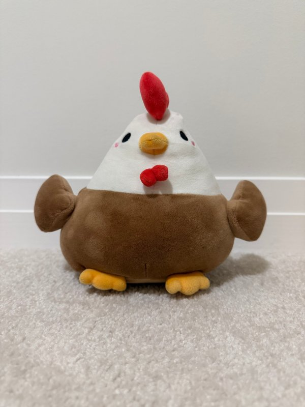
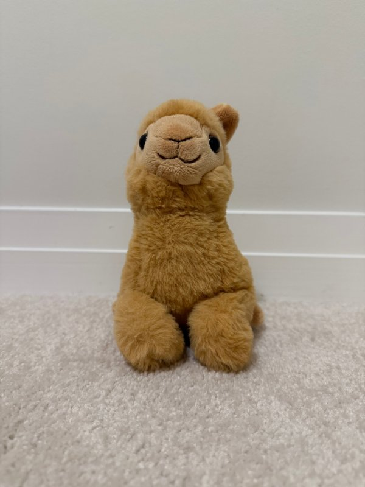
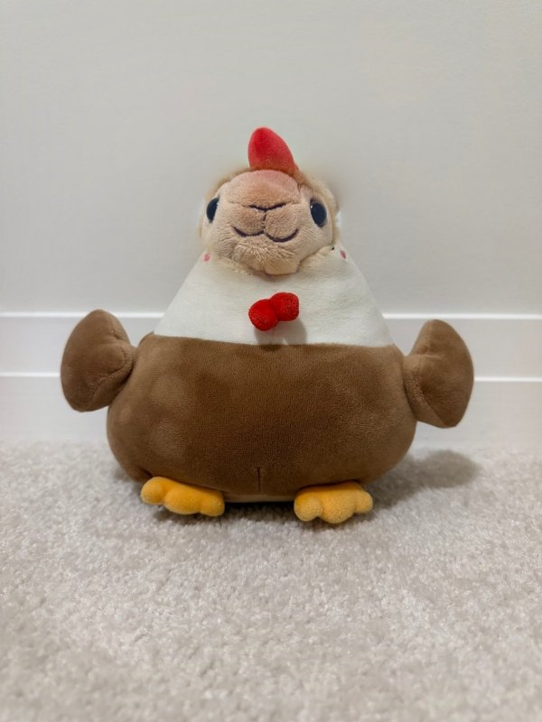
This is the Laplacian stack of each image and the masked levels that created the chicken and llama blend:
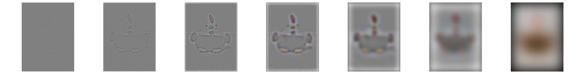
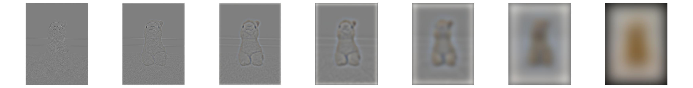
The layout is the same as Figure 3.42: Laplacian levels 0, 2 and 4, then all of the levels added together. The middle column is almost entirely grey because only the llama's face inside the ellipse is kept. In the bottom middle image, the face fades out into black around the soft edge of the blurred mask instead of being cut off sharply.
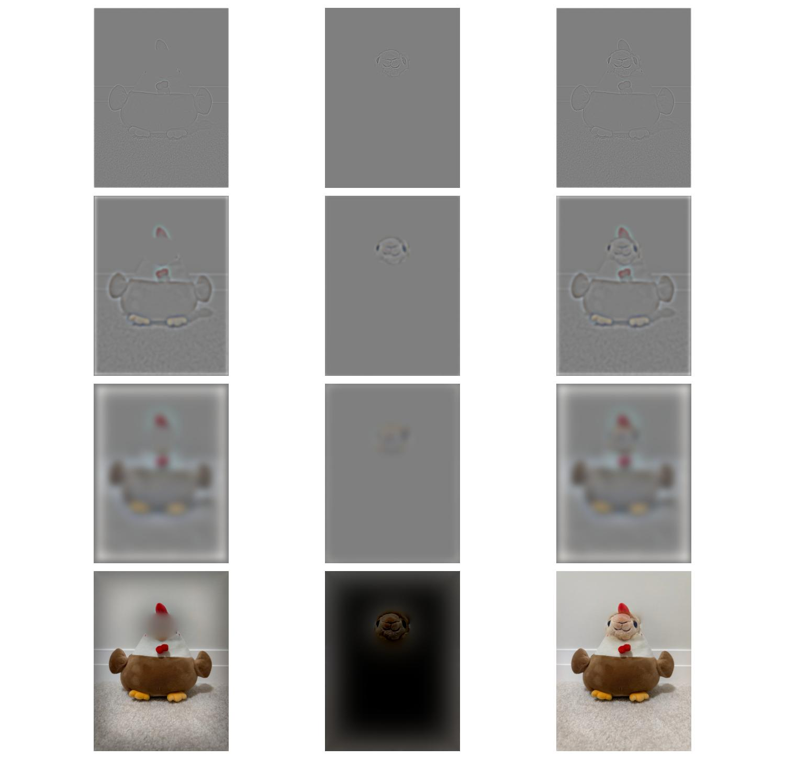
To see how colour affects the blend, I made the chicken and llama blend again with both images converted to grayscale and kept everything else the same.
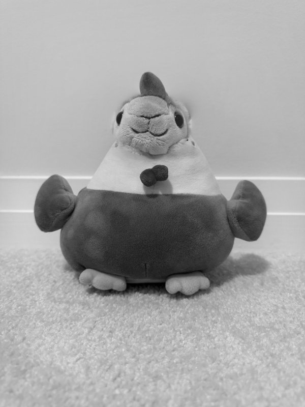
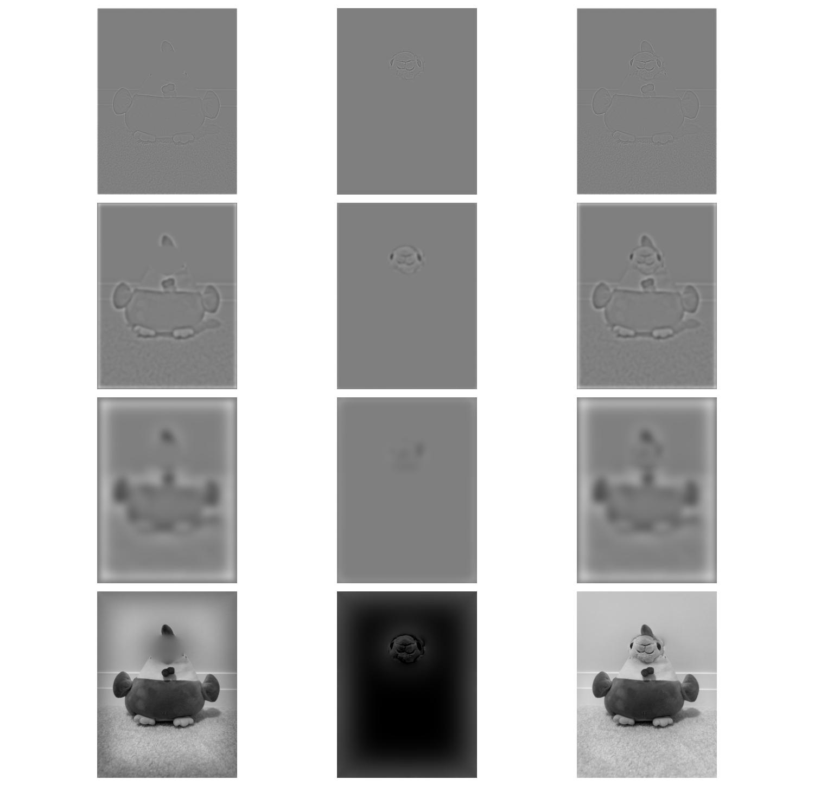
The seam is easier to see in colour. The llama's tan face and the chicken's white head are different in both colour and brightness, so the edge of the ellipse stands out. In grayscale both turn into similar light greys, so only the brightness difference is left and the edge is softer. The faint tan haze that spreads from the llama's head onto the white wall in the colour version is also much harder to notice in grayscale. However, colour is what makes each animal recognizable. The red comb and bow show that the body is a chicken, and the tan fur shows that the face is a llama. In grayscale, the comb and bow turn dark grey and the result looks more like a single plush toy than a chicken with a llama's face. I chose to keep colour because it makes the blend much more convincing, and it works best when the two images have similar colours near the seam. The capybaras are an example of this, since their faces are almost the same brown and the colour change across the seam is hard to see.